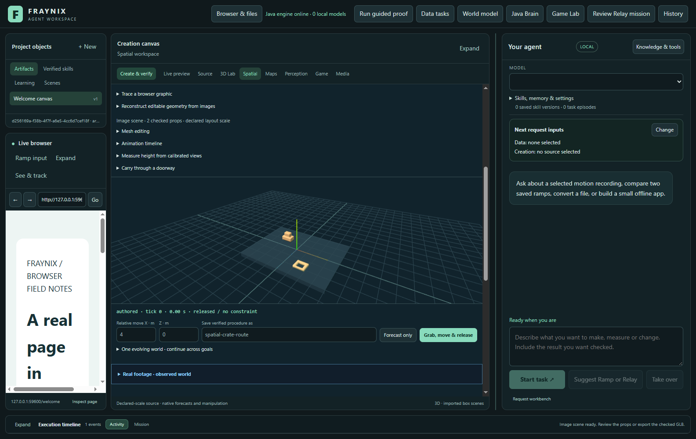
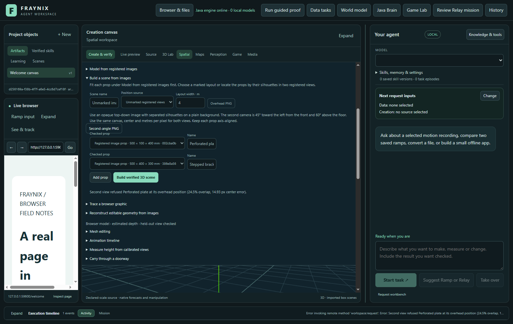
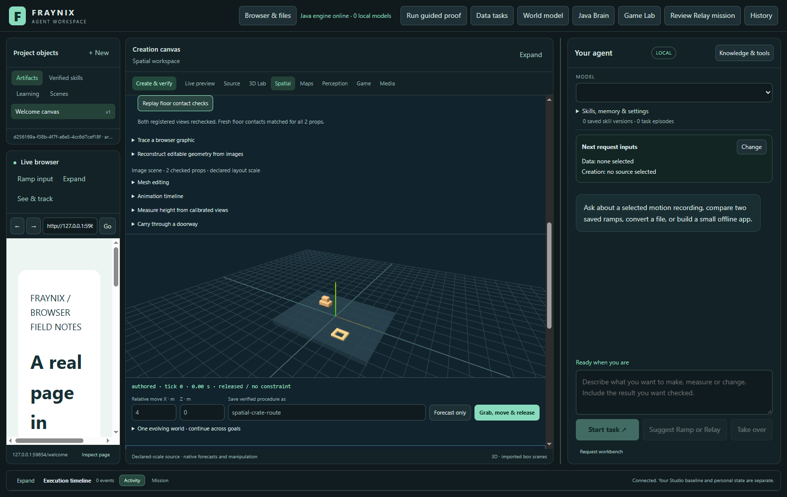

Locate unmarked props and verify their positions from a second view
The overhead image supplied the layout. A registered second angle checked both positions and refused a deliberately shifted plate.

Two props placed from an unmarked overhead image

A shifted plate is refused at its unchanged overhead position

Both original views and floor contacts rechecked after restart
System files
Open source